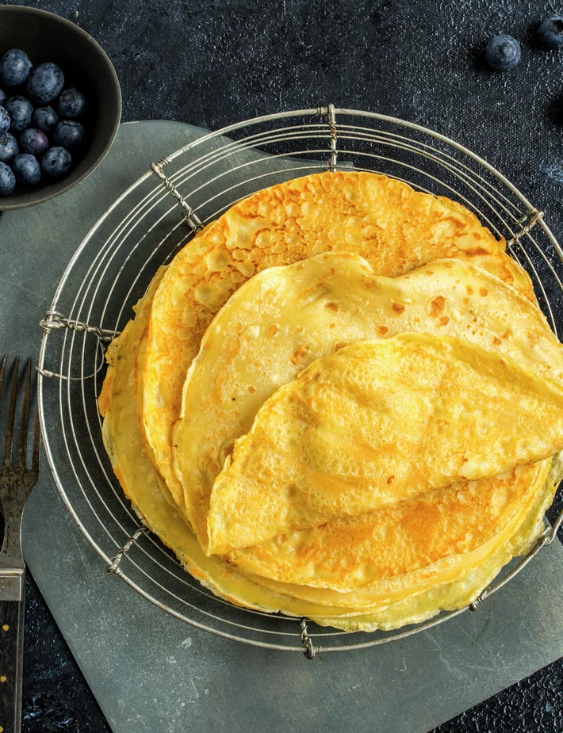

Pannekaker

Norwegian Pannekaker (Pancakes)
180 gall-purpose flour500 mlwhole milk½ tspsalt4eggs- butter for frying
Place all the dry ingredients in a bowl and add half the milk, a little at a time. Mix well each time. Mix until the batter is smooth, then add the rest of the milk.
Add the eggs and mix. Note that the eggs bind everything together so remember to add enough. Leave for ½ hour.
Heat up a frying pan and add some butter. Add some of the batter (about a ladle full), and make sure it reaches all the way to the corners of the pan. Once nice a brown flip it and let it brown on the other side. Place on a plate in the oven at 180 fahrenheit to keep warm.
The pancakes go well both with sweet and savior toppings and sides. Blueberry jam, sugar and cinnamon, soups, mushrooms etc.